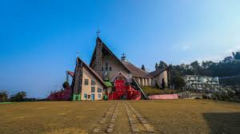
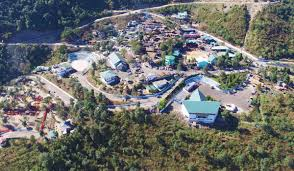
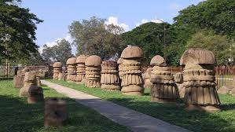
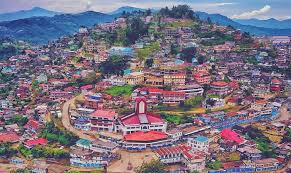

Kohima

The hilly capital city, famous for the Kohima War Cemetery, a poignant memorial dedicated to the soldiers who died in the Battle of Kohima during World War II.
Kisama Heritage Village

The main venue for the annual Hornbill Festival (usually held in December), this village is a permanent showcase of the traditional architecture, culture, and lifestyle of the Naga tribes.
Dzukou Valley
A stunning valley bordering Manipur, known for its picturesque landscapes, rolling green hills, and unique variety of wildflowers, including the Dzukou Lily, making it a favorite trekking destination.
Dimapur

The largest city and commercial hub of Nagaland, featuring historical ruins like the 13th-century Kachari Ruins, showcasing monolithic structures.
Mokokchung

Considered the cultural centre of the Ao Naga tribe, this district is known for its traditional villages, vibrant festivals, and the preserved Ao culture.